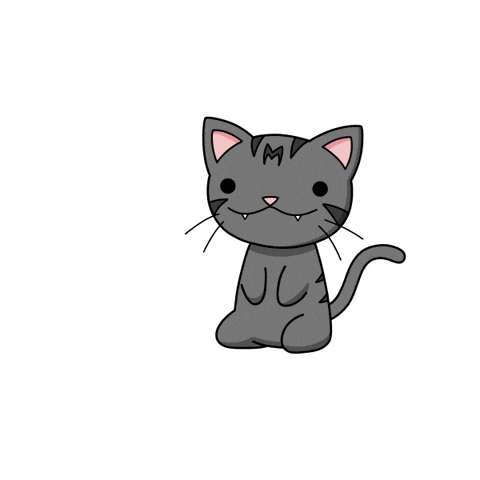

Hi, I'm Tom Ben!

Développeur en devenir, je me passionne pour la création d'applications web et l'architecture logicielle. Actuellement en plein apprentissage des couches frontend et backend, je concentre mes efforts sur le déploiement de solutions modernes et l'exploration des outils cloud. Curieux de nature et tourné vers l'innovation, j'aime relever des défis techniques pour transformer des idées en projets concrets et performants.